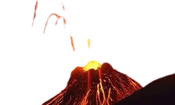

causas
Algunos fenómenos que producen desastres naturales pueden ser causados por la combinación de varias fuerzas diferentes. Por ejemplo, los deslizamientos de tierra (el movimiento de grandes masas de roca , escombros y tierra ladera abajo) pueden ser causados por lluvias que saturan el suelo en una pendiente inestable, o pueden ser desencadenados por terremotos. De manera similar, la acumulación de nieve en las laderas de las montañas aumenta el riesgo de avalanchas localizadas . Los tsunamis , olas oceánicas catastróficas que pueden alcanzar hasta 30 metros (unos 100 pies) por encima del nivel normal del mar , son producidos por terremotos submarinos, deslizamientos de tierra submarinos o costeros, erupciones volcánicas o impactos de meteoritos o cometas . Los tsunamis más grandes son olas de rápido movimiento que pueden viajar a través de los océanos y causar estragos en zonas costeras separadas por miles de kilómetros entre sí.